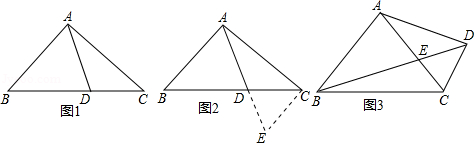

2014年北京市中考数学试题 · 数学解答题 第22题
22．（5分）（2014•北京）阅读下面材料：小腾遇到这样一个问题：如图1，在△ABC中，点D在线段BC上，∠BAD=75°，∠CAD=30°，AD=2，BD=2DC，求AC的长．
小腾发现，过点C作CE∥AB，交AD的延长线于点E，通过构造△ACE，经过推理和计算能够使问题得到解决（如图 2）．
请回答：∠ACE的度数为 ，AC的长为 ．
参考小腾思考问题的方法，解决问题：
如图 3，在四边形 ABCD中，∠BAC=90°，∠CAD=30°，∠ADC=75°，AC与BD交于点E，AE=2，BE=2ED，求BC的长．
